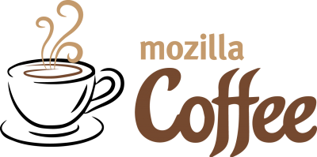

Mozilla Coffee - Our Company
Back in the early 2000’s Mozilla Coffee was the anti-Starbucks. We were a growing coffee company based in Vermont and stood on a foundation of admirable environmental ideals with a history full of environmental innovations. In many ways, we are still a leader of corporate environmental stewardship. But in 2006, our company quickly became a walking contradiction.
While continuing to profess their environmental
sanctity, advertising in GOOD magazine, and using
the tagline brewing a better world
—the company
shifted from promoting and selling Fair Trade organic coffee,
to more than 80% of sales coming from our special machines
and M-cups.
We were merged with Mozilla-Foundation in 2010, and we are looking forward to being the biggest coffee company in the world.